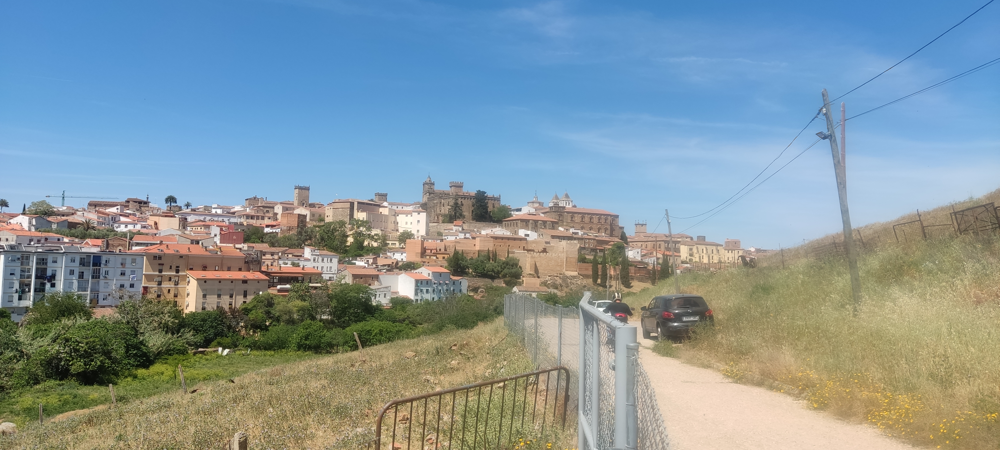

Los origenes Cáceres - Rivera del Marco

Descubre Cáceres menos conocido desde la Ciudad Monumental Patrimonio de la Humanidad, al complejo arqueológico del calerizo, paseando por la ribera del Marco, su rio, motor social, industrial, histórico y ambiental, cuevas prehistóricas, via de la plata, conventos, fuentes, oficios, leyendas e historias desarrollan la forma de vida de la ciudad desde las mejores panorámicas de la villa medieval en su entorno más natural.
|
Duración: 2 h. |
SE ADMITEN MASCOTAS |
|
Precio: 15€/pax. |
Salida: Pza Santa Clara - Puerta de Mérida. |
|
Dificultad: fácil. |
|
|
Distancia: 3 km. |
Pregunten por el itinerario. |

Los Barruecos
En caso de haber disposición la duración de la visita podría ser escogida entre 1,5h a 3h, no variando el precio, Ruta a pie por el monumento natural Los Barruecos conociendo sus orígenes el impacto tan especial de la naturaleza en su geografía y la presencia de humanos desde la prehistoria a los tiempos modernos, charcas, formaciones geológicas, tumbas antropomorfas, pinturas y grabados rupestres, y su flora por uno de los entornos naturales más especiales de toda la región, la colonia de cigüeña blanca más grande de Europa que anida sobra roca, ven a descubrir Los Barruecos!
|
Duración: 1,5/3h |
|
PRECIO: 23€ / PAX ---- 100€ / GRUPO - 6 |
|
Importante: |
|
• El itinerario se realizará en funcion al grupo y a las condiciones climáticas |
|
• Mascotas siempre con correa. |
|
• Prohibido aparcar fuera de las zonas habilitadas. |


Cáceres Monumental
Visita guíada por el entorno más emblematico de Cáceres, su ciudad medieval que te transportará a la villa del siglo XV-XVI, paseando entre sus palacios, plazas e iglesias, escenarios de película, hasta su plaza mayor, la villa de Cáceres te espera.
|
Duración: 2h. |
|
Precio: 12€ / pax. |
|
Dificultad: fácil / no accesible . |
|
Distancia: 1,5/2 km. |